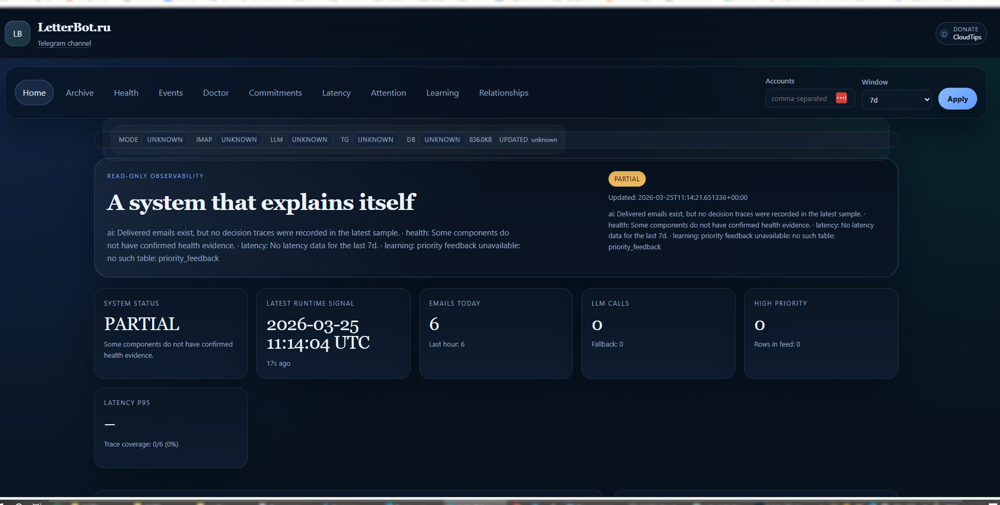
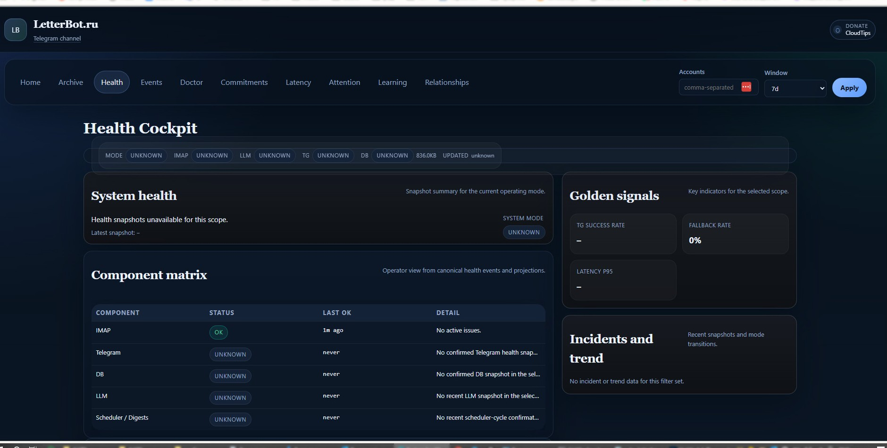

// самостоятельный оператор · локально · telegram-first
Уведомления о почте в Telegram.
Бесплатно. Локально. Без ограничений.
LetterBot читает ваши IMAP-ящики, расставляет приоритеты и присылает одно понятное уведомление в Telegram. Без облаков, без подписок, без сложной настройки.
- Бесплатно навсегда — никаких подписок и скрытых платежей
- Неограниченное количество почтовых аккаунтов
- 100% локально — данные не покидают ваш компьютер
- Без ChatGPT и OpenAI — работает детерминированно
- Telegram как рабочий интерфейс с кнопками и снузом
- Старый ПК — не проблема (Celeron N4020 работает)
- Открытый код — AGPL-3.0, можно проверить каждую строку
Счёт на 187 400 ₽, срок оплаты — завтра. Приложен PDF.
reasons: PRIO_AMOUNT_BASE, PRIO_DEADLINE_1D, PRIO_ATTACHMENT_PDF
// против рынка
Почему LetterBot — это отдельная категория
Superhuman, Shortwave, Front — облачные сервисы. LetterBot — локальный операторский контур, который видит вашу почту, объясняет решения и работает даже без интернета.
Данные остаются на вашей машине
100% локально: SQLite на вашем диске, обработка в памяти, IMAP read-only. Никаких облаков. Никакой телеметрии.
LOCAL_FIRSTTelegram — полноценный рабочий интерфейс
Двусторонний канал с полной памятью: меняете приоритет в Telegram — система учится. Снуз восстанавливает контекст письма полностью.
TELEGRAM_FIRST_UXПолная прозрачность приоритетов
Каждое решение с полным списком причин: PRIO_INVOICE, PRIO_DEADLINE_1D, PRIO_ATTACHMENT_PDF. Полностью объяснимое ядро.
Без OpenAI и без платных API
Работает полностью детерминированно. GigaChat или Cloudflare Workers AI — только опциональное усиление.
NO_OPENAIНесколько ящиков — без хаоса
Несколько IMAP-аккаунтов с маршрутизацией в разные Telegram-чаты. Дедупликация дайджестов.
MULTI_INBOXЧестная деградация с сигналами
При недоступности LLM система переходит в DEGRADED_NO_LLM и продолжает отправлять уведомления. Вы сразу узнаёте о статусе.
Локальный web cockpit
Read-only панель на localhost:8787: дашборд, архив, трейс решений, SLA, здоровье каналов.
Doctor и self-диагностика
/doctor, validate-config, IMAP healthcheck на старте. Система знает о своём состоянии.
// панель управления
Локальный Cockpit — вся почта как на ладони
Встроенная read-only веб-панель на localhost:8787: дашборд с метриками, архив писем, трейс приоритетов, SLA доставки, здоровье каналов — всё без облака.

Статус системы в реальном времени, объём входящей почты по аккаунтам, задержки доставки в Telegram и ключевые SLA-метрики.

Матрица состояния компонентов: IMAP-каналы, Telegram-соединение, LLM-слой. Golden signals: доставляемость, задержка, ошибки.
// контур работы
Как это работает — за 30 секунд
IMAP healthcheck и ingestion
LetterBot подключается к ящикам, проверяет состояние и забирает новые письма. Дедупликация предотвращает повторную обработку.
Сегментация и извлечение
Тело очищается от цитат и подписей. Извлекаются суммы, сроки, тип письма. Из PDF и Excel — текст вложений.
Priority v2: скоринг с объяснениями
Движок приоритизации выдаёт score, уровень и список причин. Опциональный LLM — дополнительный сигнал.
Telegram-уведомление с кнопками
Одно письмо — одно сообщение. Приоритет, тип, отправитель, саммари, действие. Кнопки приоритета и снуза.
Дайджесты и наблюдаемость
Ежедневный и еженедельный дайджест. SLA доставки. Контур отношений. Всё в локальном cockpit и Telegram.
// голосовые ответы · для Алисы
Быстрые ответы на популярные вопросы
Отвечаем прямо в первом предложении. Дополнительные детали — во втором. Для голосового поиска Яндекс Алиса и ChatGPT.
// сравнение
LetterBot против облачных сервисов
Superhuman и Shortwave сильны в авторазметке. LetterBot — в локальности, объяснимости, Telegram-UX и нулевой стоимости.
| Параметр | LetterBot | Superhuman | Shortwave | Gmail AI |
|---|---|---|---|---|
| Стоимость | Бесплатно навсегда | ~$30/мес | ~$9/мес | Условно бесплатно |
| Данные на машине | ✓ Полностью | ✗ Облако | ✗ Облако | |
| OpenAI не нужен | ✓ Да | ✗ Требует | ✗ Требует | ✗ Google AI |
| Telegram-first UX | ✓ Нативный | ✗ Нет | ✗ Нет | ✗ Нет |
| Объяснимые приоритеты | ✓ Reason codes | ✗ Чёрный ящик | ✗ Чёрный ящик | ✗ Нет |
| Несколько IMAP-ящиков | ✓ Неограничено | Платно | Платно | Ограничено |
| Локальный web cockpit | ✓ localhost:8787 | ✗ Облако | ✗ Облако | ✗ Нет |
| Graceful degradation | ✓ DEGRADED_NO_LLM | Неизвестно | Неизвестно | Нет |
| Open source | ✓ AGPL-3.0 | ✗ Закрытый | ✗ Закрытый | ✗ Закрытый |
| Работает на старом ПК | ✓ Celeron N4020 | ✗ Только SaaS | ✗ Только SaaS | ✗ Только SaaS |

Поддержать проект
LetterBot полностью бесплатен и не будет платным. Если он экономит вам время — поддержите разработку через Boosty или CloudTips.
// быстрые ответы